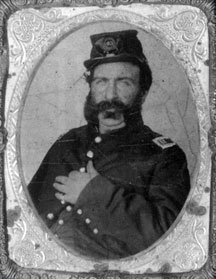

|

NAME: John Courtney Meagher
BORN: 1827
DIED: 1864
ALLEGIANCE: Union
HIGHEST RANK: Captain
UNIT: 40th Ohio Infantry, Company H
RECORD: Commissioned into 40th Ohio Infantry on
November 21, 1861, as first lieutenant. Promoted to captain
April 1862. Captured at Missionary Ridge, Tennessee, on
September 21, 1863. Imprisoned at Libby Prison, Richmond,
Virginia, October 1, 1863 to February 1864. Paroled February
1864. Died August 15, 1864, after being discharged from
service.
|
|
Among the many immigrants who fought on both sides during
the Civil War, a significant percentage hailed from Ireland.
Like many of his Irish brethren, John Courtney Meagher came to
America in hopes of securing a better life for himself and
his family. What he found instead was war.
Born in Dublin in 1827 and educated there and in London,
Meagher came to the United States in 1848, settling in
Kimbolton, Ohio, with his wife, Rebecca, and their three
children. He was an artist and a musician, and he
established a marble shop in Kimbolton.
When war broke out, Meagher joined the Union army at
Cambridge, Ohio, as a first lieutenant and was commissioned
into Company H, 40th Ohio Infantry, on November 21, 1861. He
was promoted to captain in April 1862.
Meagher participated in a number of major battles, but
was never wounded. But Confederates captured him on
September 21, 1863, at Missionary Ridge, Tennessee, during
the Battle of Chickamauga, Georgia. He was sent to Atlanta
and on to Richmond, Virginia, where he was confined at Libby
Prison.
Meagher's wife sent her imprisoned husband boxes of food,
which he shared with his fellow inmates. In one package was
a beautiful cake, iced in white and decorated with the Union
flag. Meagher carried the cake throughout the prison, to the
cheers and salutes of the men. He also shared liberal
portions of his food with the prison doctor, whose wife was
sick. As fond as the Irish are of their "tay," Meagher had
no way to prepare the beverage, so when he received a
package of it, he gave it to the doctor. The physician later
told Meagher that the tea seemed to help his wife recover.
In February 1864, Meagher received parole and traveled
home to Cambridge for a 20-day leave. He returned to Camp
Chase, Ohio, was duly exchanged, and returned to his
regiment on May 19.
The months of incarceration had taken their toll, though.
Meagher's physical condition deteriorated, and his record
indicates he had an enlarged liver and spleen, feet and
legs, and jaundice. Following his discharge from service,
Meagher returned home to Ohio, where he died August 15,
1864.
Source: Civil War Times Illustrated
43:2 (June 2004), 16.
|